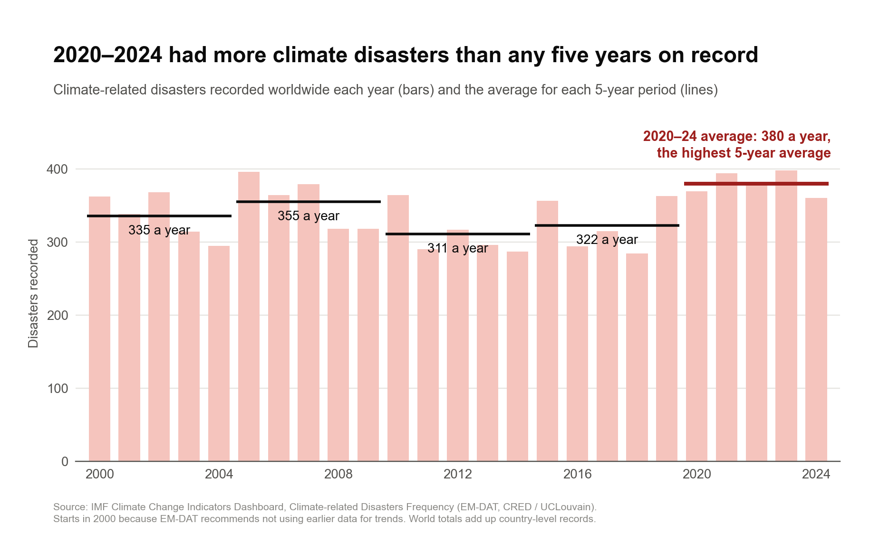

Proposition: Climate-related disasters are becoming more frequent.
Our data is the Climate-related Disasters Frequency dataset from the IMF Climate Change Indicators Dashboard (the original source is EM-DAT). For each country, it has how many climate-related disasters there were each year from 1980 to 2024 (floods, storms, droughts, wildfires, landslides, and extreme temperatures) and how many people were affected. The file doesn't have a world total, so we added up all the countries for each year. We only used 2000 to 2024 for both charts because EM-DAT's documentation says the older records are less complete and recommends not using pre-2000 data for trends.
We scored each design decision from −2 to 2, where −2 is fully deceptive, 0 is neutral, and 2 is fully earnest (we used half points sometimes). We decided not to use any deceptive techniques in the final, so all of our scores ended up positive.
FOR the Proposition

Design Decisions and Rationale:
- Starting in 2000 (score: +2). EM-DAT says the data before 2000 isn't reliable for trends, so we didn't use it. Starting at 1980 would have made this side look a lot stronger since the count roughly triples, but some of that is probably just better record keeping. We went with what the source recommends even though it hurt our argument.
- Comparing 5-year averages (score: +2). The yearly numbers move around a lot (284 in 2018, 398 in 2023), so comparing single years would make it easy to cherry-pick. We used 5-year averages instead. 2020–24 averaged about 380 a year, which is higher than any other 5-year period.
- Title about the record (score: +1.5). The title says 2020–2024 had more climate disasters than any five years on record. That's true, and it was the best point we had for this side. We gave it 1.5 instead of 2 because it leaves out that 2010–14 and 2015–19 were actually lower than 2000–04, so it hasn't gone up steadily. You can still see that in the chart though.
- Zero-based axis and every year shown (score: +2). The bars start at zero and all 25 years are shown. We also used the same 0 to 450 scale as the against chart so you can compare the two.
- Dark red for the latest average (score: +1). We made the 2020–24 average line darker and thicker than the rest, and used red since this is the more alarming side. The numbers are the same either way, but it does make people look at that part first, so we gave it a 1.
AGAINST the Proposition

Design Decisions and Rationale:
- Starting in 2000 (score: +2). Same reason as the for chart, EM-DAT recommends not using the older data for trends. It also happens to help this side, because most of the big increase in the dataset is before 2000. We would have started at 2000 anyway since that's what the source says to do.
- Showing how uncertain the trend is (score: +2). In our checkpoint feedback, we were told our against charts still showed the trend going up. So for the final we added the 95% confidence band around the trend line. The trend is +0.7 disasters a year, but the data fits anything from about −1.5 to +2.9 a year (p = 0.53), which means we can't really say it's going up. We added a flat dotted line too, so you can see a flat line fits inside the band.
- Labeling 2005 and 2023 (score: +1.5). 2023 is the highest year with 398, but 2005 had 396, so the record is barely higher than a year from almost 20 years ago. Both numbers are real, but we chose which years to label, so we gave it 1.5.
- Zero-based axis on the same scale as the for chart (score: +1.5). Line charts don't have to start at zero, and starting at zero makes changes look smaller. We did it to match the for chart so they're easy to compare, but we know it makes the line look flatter, which helps us.
- Title that says "no clear trend" (score: +1.5). This is basically our main argument, and the stats back it up. We didn't say disasters went down, and the chart still shows 2020–24 was high. It's a 1.5 because the best estimate is still a small increase, so "no clear trend" leans a little toward our side.
Final Reflection
For the checkpoint we used some deceptive techniques, like a dual axis and a title comparing the lowest year to the highest year. For the final we wanted to see if we could make both sides persuasive without any of that, and it ended up being harder than we expected. When we looked at EM-DAT's documentation, it said not to use data before 2000 for trends. Most of the increase in our checkpoint for chart came from the 1980s and 1990s, so the for side got a lot weaker. Our checkpoint feedback also said our against charts didn't really argue against the claim because the trend was still going up, and people affected isn't the same as how often disasters happen. Our first try at an honest version had the same problem, since the title said disasters had "risen only slightly." We ended up changing the against argument to whether there's even a clear trend since 2000, and based on the stats there isn't.
We were surprised that both sides still worked with honest charts. They use the same years, the same data, and the same y-axis, and both titles are true. The for chart looks at the 5-year averages, where 2020–24 is the highest. The against chart looks at the trend, which is small compared to how much the numbers change from year to year (years are usually about 38 disasters above or below the average, while the trend only adds about 16 over 24 years). Even without tricks, what we chose to show and what we put in the title still changes how people read it.
We think a visualization is ethical if someone who saw all of the data would still agree with what the chart says. Highlighting something is fine as long as it's true and you're not hiding anything important. Things like rigged axes, cherry-picked years, or ignoring warnings from the data source go too far, and those were the things we took out after the checkpoint. The line isn't always clear though. Even our honest charts have choices that help one side, like starting the line chart at zero, and that's why not every decision got a 2.